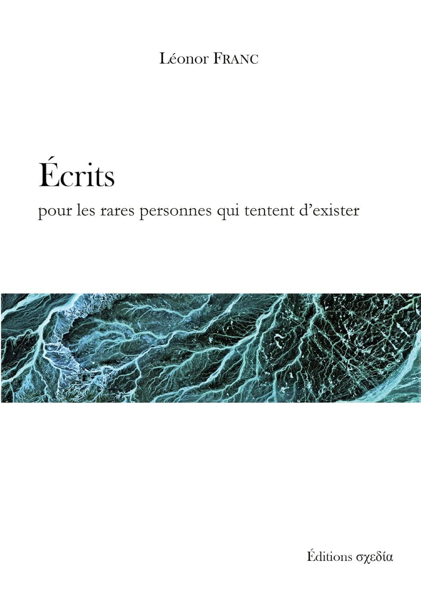

Catalogue

Le monde comme épopée et comme théogonie
Tome I : Métaphysique et cosmologie
Florentin Bidault, septembre 2024

Les crimes des gens ordinaires
Essai sur la violence ignorée
Léonor Franc, septembre 2024
⚠ Sur Amazon la nouvelle couverture
n'est pas encore disponible

Brèves résolutions de problèmes philosophiques
suivant une méthode hégélienne
Léonor Franc (avec Loïc Maréchalen), mars 2023

Le sourire de l'Absolu
Florentin Bidault, juillet 2022

Écrits pour les rares personnes
qui tentent d'exister
Léonor Franc, mars 2022